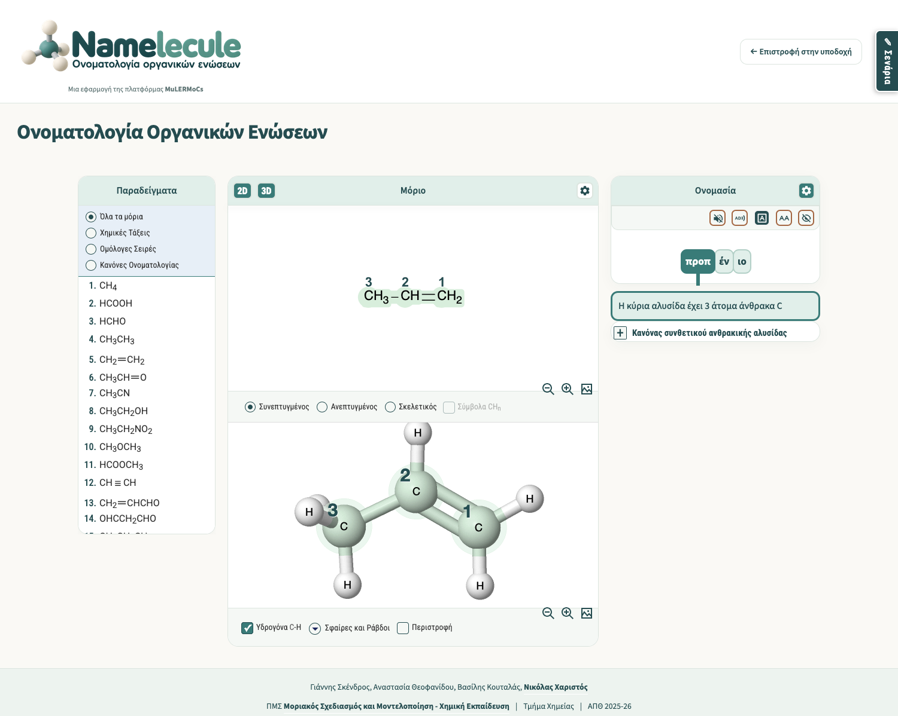
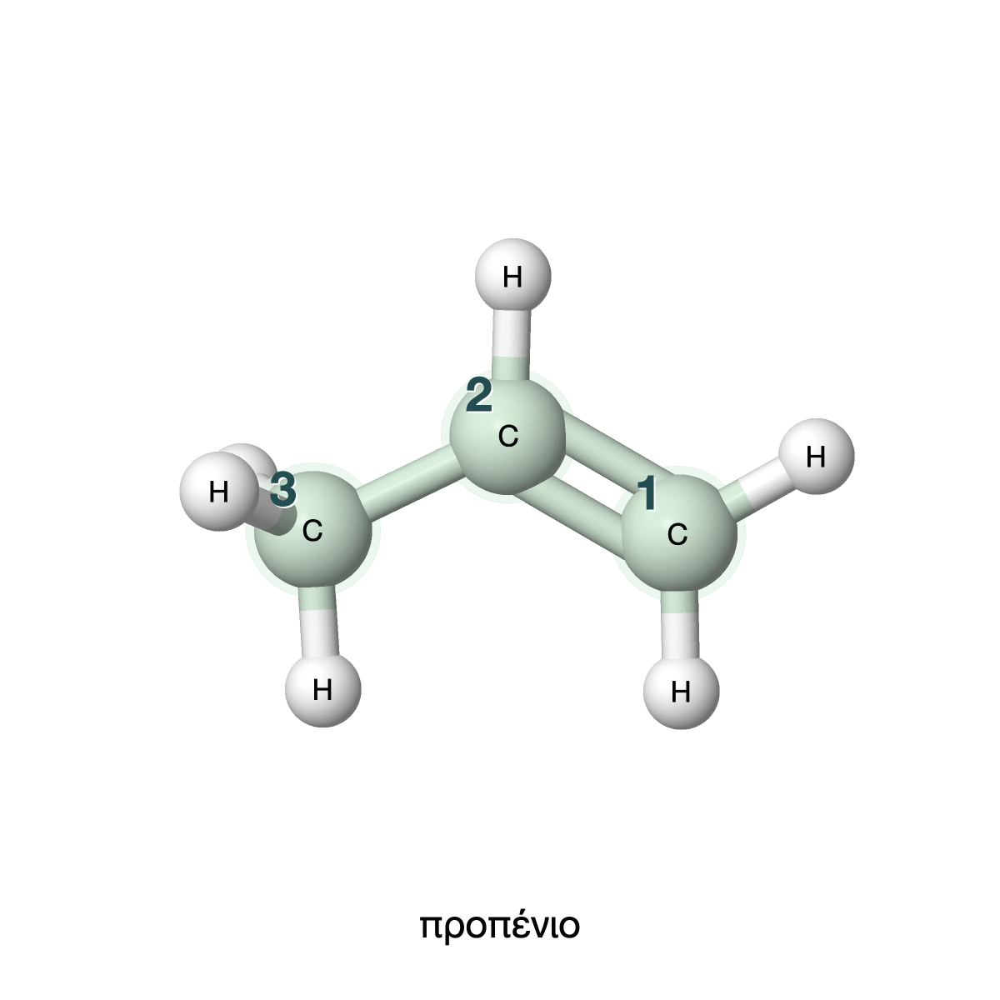

Η διόρθωση JSmol στην κύρια Namelecule
31 Οκτωβρίου 2026 · Τοπική ενσωμάτωση · Δεν έχει δημοσιευτεί
Το JSmol σταματά την επανασχεδίαση και το resize του applet όταν αυτό καταστρέφεται. Η ίδια ελεγμένη έκδοση φορτώνεται στην εξερεύνηση και στα μαθήματα.
Άνοιγμα κύριας εφαρμογής · Βίντεο ελεγχόμενων περιπτώσεων πριν/μετά · Τεχνική αναφορά · Πλήρη αποτελέσματα
Τι ελέγχθηκε
- Πριν από τη διόρθωση 10/10 ελεγχόμενες περιπτώσεις αναπαράγουν σφάλμα. Με την ενσωμάτωση 0/10.
- 14 μαθήματα, 70 επιλεγμένες καταστάσεις και 14 έξοδοι στη βιβλιοθήκη, χωρίς σφάλματα JavaScript.
- Γρήγορες εναλλαγές μορίων, εμφάνιση/απόκρυψη 3D, resize και φόρτωση από υποδιαδρομή ιστοτόπου.
- Αρίθμηση, επισημάνσεις, zoom, ετικέτες και πραγματική παραγωγή PNG.
- Ίδιες ονομασίες και ετικέτες και στις 422 διαθέσιμες μορφές 2D των 141 μορίων.
Τα δεδομένα μορίων, ο αλγόριθμος ονομασίας και η React έκδοση διατηρούνται. Υπάρχει ελεγμένο, επιλεκτικό αντίγραφο επαναφοράς.
Πραγματική οθόνη της ενημερωμένης Main
Κλικ στο συνθετικό «προπ»: αρίθμηση 1–3 και επισήμανση της κύριας αλυσίδας στις δύο αναπαραστάσεις.

Η πραγματική εικόνα PNG του JSmol
1200×1200, με αρίθμηση, επισήμανση και όνομα. Δημιουργήθηκε από το κανονικό χειριστήριο αποθήκευσης και ελέγχθηκε ως αρχείο εικόνας.

Τι παραμένει για επόμενη ενότητα
Το j2s εξακολουθεί να φορτώνεται από CDN. Το πακέτο offline, η ετοιμότητα κάθε νέου μοντέλου και η πρόβα συνεδρίου χρειάζονται ξεχωριστή εργασία. Δεν έχουν αναπαραχθεί όλα τα 337 βήματα ή όλα τα 141 μοντέλα 3D. Το πρωτότυπο διόρθωσης γραμμάτων 2D παραμένει ξεχωριστό.
Ο ανεξάρτητος τελικός έλεγχος της ενσωμάτωσης ολοκληρώθηκε χωρίς ευρήματα που απαιτούν διόρθωση. Αναφορά Reviewer. Οι εκτελέσεις browser είναι αποτελέσματα Developer· ο έλεγχος δεν αποτελεί πιστοποίηση απουσίας σφαλμάτων.